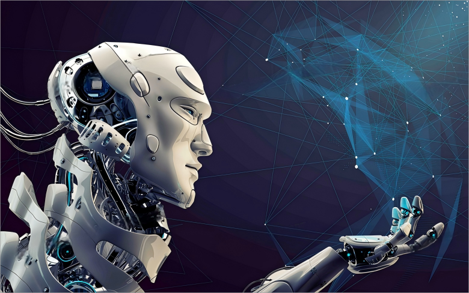
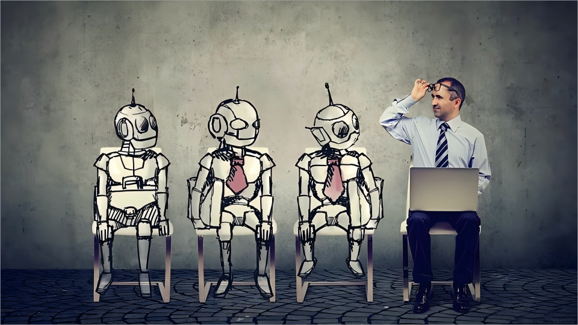
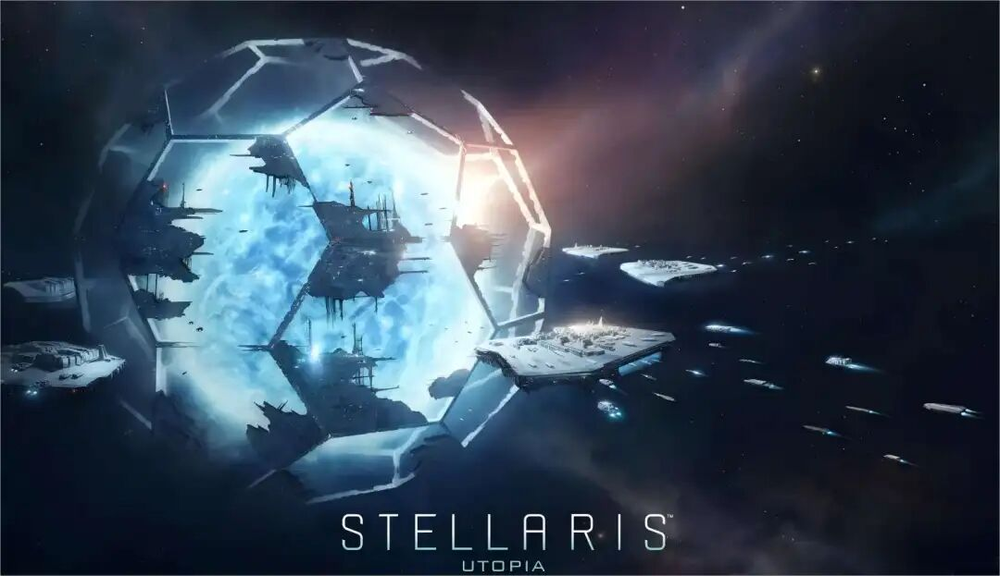

“我刚刚意识到，人类可能只是硅基生命体的引导程序......就像电脑开机的引导加载程序，是引导开机的非常小的一段代码。”——埃隆·里夫·马斯克
前程似锦
一直以来，人类对于进步，有着追求真理一样的争先恐后、兴致勃勃的姿态。进步的背后，不仅是当前利益的驱使，也是因为太多聪明的人绘制的未来蓝图太迷人——但是，关于那个“机器人时代”、“人工智能时代”，它是带领我们走出疲沓徘徊的经济的曙光，还是如夜幕降临，兵临城下？百年后史书上真的会把我们的时代写作人类史上的前所未有的第四次工业革命吗，还是说，这只是第三次工业革命拖沓的微光，而我们太着急于命名我们取得的功绩。可是，无论如何，身处竞争的时代，我们在争取个人利益最大化，国家也在争取国家利益最大化。经济、科技与个体命运环环相扣，我们不可能停下而甘于落后，因为人活在当下，没有一个人愿意被潮流抛弃，吸入历史驰过的烟尘。我很同意那句话，进步是一种迷人的精神，也是一种无法停止的惯性。

图1 机器人时代
但当我们从月球上观望地球，不管是农业革命，还是蒸汽机革命，无论是从奴隶制走向封建制，还是资本主义与社会主义分头追逐自己价值观的理想社会，人类社会的每一步仿佛都获得了人类利益的进步，而看不见历史给出的明码标价。以至于今天的我们已无法想象居无定所、没有无线网络、受尽苦役的生活，尽管我们用了顽强的生命力、更得体但更隐形的劳动剥削、历史上数以万计的渺小人生作以交换。但令人类长舒一口气的是，每一次的巨大革命，都在剧烈震动和牺牲后完成了利益分配，达到了新的均衡，社会并没有分崩离析，而是显得蒸蒸日上。
今天，我们即将迎来了机器人与人工智能的革命，在我看来却有比过往未知的、难以控制的一面，以至于震动未必以“阵痛”面世，代价可能比过去几次革命更加痛苦，而均衡可能迟迟不能到来。倘若在均衡到来之前，我们已消耗了几代人生，那么我们有必要重新审视这一次的进步的代价。现在人工智能的发展还没到达一个指数增长的爆发点，因此我们对未来还有畅想和建设的空间，未雨绸缪地做好预防和矫正是有必要的，不能为了进步，盲目前进和讥讽技术忧虑者——我们未必每一次都能承受横冲直撞的代价。我认为技术乐观者有必要多一丝苦虑，因为我们在驶入看似坦途的迷雾。
关于那些剩下的、无用的人与那些容易替代的工作
我一直不相信《资本论》所说的，“所有排挤工人的机器，总是同时地而且必然地游离出相应的资本，去如数雇用这些被排挤的工人。”（《十三章 机器与大工业》）。也许，在那个时代乃至今日是奏效的，倘若马克思见到未来之景象，不知是否还会这样认同。在《今日简史》，我找到了我心中的观点干练的总结。即那些简单的、重复性高的、技能水平低的工作会被机器替代，而那些剩下的劳动力，很难重新被吸收进一个发展日新月异的经济体。不要说那些在流水线下岗的工人，就算是接受过高等教育的人，在心态上也会难以接受失业或者行业的覆灭，而且着手准备进入新行业需要的门槛十分之高，有可能与之前的知识完全无关，相当一部分的人因无望而自动放弃再就业。
这种结构性失业，带来的震动可能比过往任何一次生产上的巨大变革带来的要大，因为新行业无疑是要迎合计算机科技的，而这部分行业的门槛将远远高于技能型的门槛。而且，计算机科技的行业还有一个特性就是更新换代很快，一边在进化，一边被淘汰，（这对一生寻找稳定工作的中国人是多么令人沮丧的事情...）由此带来的就业失业，我想波动也会更大。我猜想说不定到均衡时，工种被分为两类型，一类是关于人工智能科技的，一类是无关的。无关的体量虽不大，利润与工资不高，但是有基础性生产的功能，还算稳定。有关的则自动在内部互相竞技，获得的利润空间大的工资将在短期内很高，尾部的行业不断经历淘汰与更新。行业贫富差距被数字科技划出深深一条沟。再者是地区间、阶层间获得的科技资源不同，收入不公平越来越明显。遑论那些已经失业的、根本没有工作的人们了。
全世界的工作由机器人做了，就没有了需要剥削的活的劳动力。我们“上午打猎,下午捕鱼,傍晚从事畜牧,晚饭后从事批判”的日子，可不可能由机器人时代的诞生而来临？那样的日子还太遥远，我们看不到社会制度会因为机器发生怎样奇异的变化，我们对社会形态的想象力也很匮乏，无法作出超出时代的预测。但只要有一天我们需要依靠“劳动——工资”的系统为生，我们就需要担心机器对就业的负面影响。因为由机器而获得好处的人们并没有把利益再分配到由机器受损的人们，相反，他们还因机器而加重了被剥削。

图2 机器人代替人工
也许有人认为这是一种市场的淘汰，无可指责，但如果高级形态的人工智能可以替代的工作不仅仅只是文书、普通会计和的士司机，也可以是你我现在脑子里觉得“高级”的那些职业呢？倘若你也为着自己的利益长远地着想，前提是把“无知之幕”盖在自己头上，我相信人们也会对人工智能的发展多一些思虑。如果人工智能的飞跃发展代替了这个地球上太多的工作，而只有少部分头部的群体在获利时，且我们这个星球又恰恰是以工作来满足生存需求和实现人生价值的地方，没有工作等于没有价值、没有尊严，那么我们就应该站在大多数人的立场、人文地考虑大多数人的利益、心理健康与社会安定了。
高尚的灵魂是我们最后的、沮丧的说辞吗——那些关于灵魂的工作
在《仿生人会梦到电子羊吗》中，即使仿生人俨然是人类的模样，拥有一切逼真的面貌、感知和智力（甚至超越常人的），却无法理解其他生命体存在的意义。即使能佯装对其他生物愤怒与同情的情绪，也无法通过移情测试，更不会理解默瑟主义。其实，菲利普对人工智能的想象是符合很大部分人的感受的。作为人类的一员，即使我们象棋下不过AI，智力体力完败，甚至有一天计算、表达与组织能力也被AI取代，人类仍然高傲于机器人的原因，无非就是一样事物——灵魂。我们有，它们没有。我们是“he”，是“she”，它们只能是“it”。但菲利普明显没有料到生物科技的迅猛发展，人类已经逐渐看到一个真相，即“情绪也不是什么神秘的现象，只是生化程序反应的结果”（《今日简史》）。天赐的情感能力，包括区区一个移情能力，都可以在人类神经系统用电化学反应刺激而成，而这一启示，早就蕴含在缸中之脑、庄周梦蝶里了。
图3 Philip·K·Dick《仿生人会梦到电子羊吗》
如果歌以咏志、诗情、画意不再是人类的专利，复杂的情绪原来是生物化学接受外界刺激的反应，高尚的灵魂无非是浸泡在长期刺激（制度、文化）中驯服和调试形成的定势行为，那么我们的高傲就失去了立足之处。大江东去浪淘尽，千年来人类对于美、知识和真理的至高追求被保留下来，千年出一个“仰天大笑出门去，我辈岂是蓬蒿人”的诗仙，百年出一幅动人心魄的《洛神赋图》，十年一作的红楼一梦冠得文学明珠，在我看来，人类中拥有最为高贵的品质、最为杰出的创作、最为灵动的才气之人完全可以睥睨人工智能的追逐，一骑绝尘，有生之年，在创意工作方面，我都不认为人工智能会掌握这样强大的能力超越人类的顶尖。对人类文明闪耀的群星，我们都要有信心。
然，才子是万里挑一，庸人如你我，难道平庸的灵魂真的是无可复制吗。很早之前我就想过，我们之所以认为自己的灵魂独一无二，只是因为没有人在和我们经历一模一样的事情，体验一模一样的感情，但是独一无二的独特只是一种排列组合的独特，情绪、情感和认知上的排列组合。灵魂与才智的市场以工资与流芳百世作为交易的货币，独特只是稀少，可并不代表可贵。我庸俗的灵魂，庸俗的能力，如众多普通人一样，被人工智能成功地学习与模仿，在创意工作上被取代，在遥远的未来不是一件难以置信的事。
AI虽成不了齐白石、郑板桥，但AI绘图已经压榨了传统的普通画师的生存空间，AI画稿是在分秒之间，还能根据甲方的需求随时调整，成本又低——有时候人类根本难以区分这些商业画稿来自画师还是机器人，甚至在机器人的画里，我们莫名地体会到了情感。（当然，这本来就是人类感情的碎片）。AI虽成不了李白、莎士比亚，但也取代了许多普通的文艺工作者的位置，写小说、剧本不在话下，给它拉个大纲就能产出成文，而作品蒙上名字依然可以打动人，而我们也只能在取下名字后看到“AI”二字后，心虚地说写得狗屁不通。
而这些，都只是发生在人工智能尚未成熟的当下。由此看，倘若未来某个时机人工智能已把人类的生物化学反应学习了个透彻，那么它们很有可能胜任平凡普通的灵魂工作、创意工作，它们的作品会以指数产出与传播，占据在互联网上每个角落（事实上，在一些APP里已经大规模出现这些令人无法分辨作者的AI作品了），导致创意工作者也面临着失业的事实。届时，我们未必可以用“没有灵魂”来指摘未署名的机器人的作品，也许我们只能运用人类的文明规则批评，“这是不道德的”。
前路慢行
“血肉苦弱，机械飞升。”——太空策略游戏《群星》
“我们几乎肯定地是生活在一个计算机模拟中。”——瑞典哲学家：尼克·博斯特罗姆

图4 游戏《群星》
赛博朋克（Cyberpunk）是一种文学、绘画和游戏的风格，它可以直译为“自动控制的网络”，它大概的内涵就是把人类、生物科技、自动化控制的网络融合控制的系统。赛博朋克起初是源于二战后经济萧条、就业惨淡的英国。到了二十世纪七十年代，赛博朋克已经，与美国科幻“新浪潮”结合，形成了现在赛博朋克的雏形。经济越是无望，就业越是低迷，人们对未来社会的幻想越是破坏性的。乌托邦被抛弃，太空探索与外星移民不再具有吸引力，赛博朋克迎来低生活、高科技的废土末世想象。霓虹灯、摩天大楼、细雨、荒漠、黄日、地下百层的贫民窟就是典型的赛博朋克意象。
原来很早以前，人类居然就已经把科幻、机械与失业联系在一起了。那时候人们就对高度机械的文明的前途，开始关于就业、贫富、生活的反思。虽然造成这一切的是末日，而非机器。此时的机器只是人器官的延伸，也是帮助人类在恶劣环境中生存的工具。但随着人类对机器越来越依赖，不同群体对机器及其技术的资源掌握能力不同，贫富差距与失业问题愈演愈烈。
更恶劣的设想就是像黑客帝国那样的，机器成为另一个人，而不再是人器官的延伸。我们会被机器人的文明制伏，最骇人的是，我们的灵魂被制伏了，更别提什么工作就业。当然，我不是一个完全的技术悲观者，不会相信世界如黑客帝国那样发展。毕竟在《黑客帝国》（1999）里出现的那些最丑陋可怕的机器帝国，让我们看到了千禧年前，人们就已经对那时尚未发育成熟、甚至刚刚起步的人工智能，有着近乎人类本能的担忧与抵触。人类社会正是因为有着一层担忧，有愿意忧虑的人，事情才不一定向那样发展——矫正与控制依然是我们对机器人系统发展的主旨。
“它们只会识时务地机械地接受即将到来的毁灭，而真正的生命---在二十亿年的生存压力下进化出来的生命---永远不会就这样认命。”——《仿生人会梦到电子羊吗》
其实，我认为人工智能的发展速度比想象中的要慢。尽管静态的计算能力很强了，但动态的联动能力发展还是很慢。做出一个在视频里面部会动会笑、微表情仿真、看不出真假的AI对话者很常见，但做一个实体的会轻巧地走走跳跳，帮忙叼个球的机器狗，几百条电子线路插在身上看起来十分脆弱，动起来磕磕绊绊。看来，我们离造出一个会实际会话、精巧计算、打点人际关系的会计师还有很长的距离。
此外，我们也不要忽略了，由于技术、人才、资源的稀缺，人类在短期制造并维护一个高智能的机器人的成本是高昂的，且很难下降。如果这个成本无法下降到比更新一个活的劳动力更低，那么我认为机器人时代就远远没有到来。人类只是为了展示智力的巅峰，而制造出的那几个机器人，因其背后呕心沥血的开发投入与高昂成本没能广泛地在生产领域普及开来，因而我们还能对他们的棋局津津乐道，而没有风雨欲来的压迫感。
且趁着这一点当下的缓慢，我们刚好可以做更多工作。例如国家和政府应该更有先见，着手制定根据伦理道德制定机器人发展的法律、关于数据安全的法律，未雨绸缪总是防止未来失控的关键；社会、教育有意识地引导未来年轻一代学习人工智能的知识，包括操控、管理机器人，理解机器人与人类社会之间的关系，这也能让人工智能可能带来的结构性失业威力消减。
另外，我认为，应该把人工智能的智慧（其实，就是人类的智慧）多多发挥在人自己身上。比如说虽然智能家居、家务机器人发展了十几年，但更高级的功能的普及程度非常低，不是拉窗帘就是提前热好水这种基本功能，与家居物联网的概念还远远不及。而发明人类工作回到家，内务全自动解决，还是按照主人的心意解决的机器人，想必对人类聪明的大脑来说不是难事，关键是如何减轻成本、物联、普及。发展这一类不太侵占人类的工作的机器人（嗯，如果说你本来就不雇佣月嫂，且家政工作更多的还是照顾人本身而不是处理内务），或许是一条不会带来太多痛苦的道路。而且对全人类来说，这比那些发挥顶尖资源和金钱换来一局人机智力巅峰角逐要更有用一些。如果能把人工智能一部分的精力放在人类工作以外的生活中，更新人类自己，减轻内务，也相当于人工智能直接服务了人类。
尽管《黑客帝国》很大概率不会发生，即使要发生，在这一天前我们还有很长的时间。但不要忘记，我们这几代人的命运，与机器是息息相关的。我们碰巧和机器人生活在同一时期——我们逐渐长大、老去，而它慢慢成熟、强壮。如果制作实体机器人所需的各种材料和资源被挖掘，或者被其他简单的、人造的材料替代，而技术一旦突破，复制机器人也不过就像复制代码一样几乎没有边际成本，机器人会像病毒一样蔓延在生产领域，那一天，庸俗的劳动力们被替代不是杞人忧天。
图5 电影《黑客帝国》
人类是不是机器人的开机密码我不知道，人类前赴后继涌入的机器人时代是好是坏我也不能预测，但我坚信好坏把握在人类自己手里。人类盲目地角逐更先进的机器人技术，那么突破人类的伦理底线、带来大规模失业与加深贫富差距是迟早的事情。如果世界上对此乐观的人居多，那么我倒愿意煞风景地站出来扫扫兴。若你依然认为现在忧虑时日尚早，那么就想想看吧，二十年前我们的电脑还和墙一样厚，如今已经像纸一样轻薄——站在历史进程激烈的浪潮中，容易失去对时间的判断。